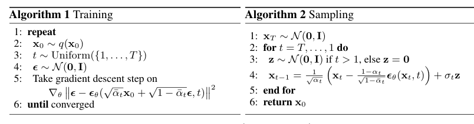
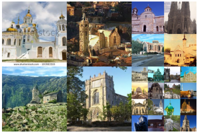

Predicting the noise, not the image, is what made diffusion models work
Ho, Jain, and Abbeel reached a state-of-the-art CIFAR-10 FID of 3.17 in 2020 by dropping one weighting term from the diffusion variational bound, and every later text-to-image model inherited the objective that was left.
Denoising Diffusion Probabilistic Models
Read the paperWe present high quality image synthesis results using diffusion probabilistic models, a class of latent variable models inspired by considerations from nonequilibrium thermodynamics. Our best results are obtained by training on a weighted variational bound designed according to a novel connection between diffusion probabilistic models and denoising score matching with Langevin dynamics, and our models naturally admit a progressive lossy decompression scheme that can be interpreted as a generalization of autoregressive decoding. On the unconditional CIFAR10 dataset, we obtain an Inception score of 9.46 and a state-of-the-art FID score of 3.17. On 256x256 LSUN, we obtain sample quality similar to ProgressiveGAN.1
A five-year-old model that had never made a competitive image
The forward-and-reverse diffusion idea was not new in 2020. Five years earlier, Sohl-Dickstein and colleagues had proposed exactly this shape. Destroy the structure in an image with a slow forward diffusion, then learn a reverse diffusion that restores it, for "a highly flexible and tractable generative model of the data."2 The framework was tractable and it was flexible. What it was not was competitive: nobody had made it produce images that stood next to a good GAN's. A parallel line, Song and Ermon's noise-conditional score networks, reached a CIFAR-10 Inception score of 8.87 by estimating the gradient of the log data density at many noise levels and sampling with annealed Langevin dynamics.3 Promising, still short of the best adversarial models.
This paper changed one thing and won. It kept the 2015 forward and reverse chains almost untouched, and it replaced the training target. Instead of asking the network to predict the slightly cleaner image at each step, it asked the network to predict the noise that had been added. The loss became a plain squared error with a weighting term thrown away. That single substitution took CIFAR-10 from the score-based field's 25.32 FID down to 3.17, the best reported for an unconditional model at publication.1 The rest of the paper is the derivation that explains why the substitution was available and why dropping the weight helped.
The forward process throws information away on a fixed schedule
The forward process is not learned. It is a fixed Markov chain that adds a small amount of Gaussian noise at each of T steps, shrinking the signal by a set factor as it goes.1
Each step scales the previous image by \sqrt{1-\beta_t} and injects variance \beta_t. The paper uses a linear schedule from \beta_1 = 10^{-4} to \beta_T = 0.02 over T = 1000 steps. Run it to the end and the image is indistinguishable from a draw of \mathcal{N}(\mathbf{0}, \mathbf{I}).1 Nothing here is a choice the model gets to make. The forward process is a definition, and the reverse process is the only part that learns.
A property worth the entire construction falls out of this definition. Because a sum of Gaussians is Gaussian, the composition of t noising steps has a closed form. You can jump straight to any noise level in one draw, without simulating the chain.1
This closed form is what makes training affordable. Without it, every gradient step would have to march an image through the chain to reach a random t. With it, training draws a timestep uniformly and constructs \mathbf{x}_t in one operation. The \boldsymbol{\epsilon} in that equation is about to become the regression target the whole method turns on.
The step you want to learn is intractable until you condition on the clean image
The reverse process is a second Markov chain, this one with learned Gaussian transitions, that starts from pure noise and walks back to an image.1
Training this by maximum likelihood is intractable, so the paper does what latent-variable models do and optimizes a variational bound on the negative log-likelihood. The bound decomposes over timesteps into a term at the endpoint, a denoising term at every interior step, and a final reconstruction term.1
The obstacle sits inside L_{t-1}. The true reverse step q(\mathbf{x}_{t-1} \mid \mathbf{x}_t) is not a Gaussian anyone can write down. Condition it on the clean image \mathbf{x}_0, though, and it collapses to a closed-form Gaussian with a known mean and variance.1 That is the move that makes the bound computable, and it is available only because training has \mathbf{x}_0 in hand.
The paper fixes the reverse variance to \tilde\beta_t rather than learning it, so only the mean is left to match. With both sides Gaussian, the KL term reduces to a scaled squared distance between the two means.1
The problem is now a regression. The only open question is what, exactly, the network should regress onto.
Predict the noise, then drop the weight
Two parameterizations of that regression are available, and they are a genuine fork. Predicting the mean asks the network to output where the slightly cleaner image sits. Predicting the noise asks it to output what was added. They are algebraically interchangeable, because the closed-form marginal already ties \mathbf{x}_t, \mathbf{x}_0, and \boldsymbol{\epsilon} together. The paper substitutes that relation into \tilde{\boldsymbol{\mu}}_t and finds the mean the network must produce.1
Take a single timestep to see what this does to the loss. At that t, matching the mean \tilde{\boldsymbol{\mu}}_t becomes matching the noise once the substitution is made. The network sees the noised image \mathbf{x}_t = \sqrt{\bar\alpha_t}\mathbf{x}_0 + \sqrt{1-\bar\alpha_t}\boldsymbol{\epsilon}. It is scored on how close its \boldsymbol{\epsilon}_\theta lands to the exact \boldsymbol{\epsilon} that produced it. Do that for every t, and the interior loss is the noise-prediction term below. It carries a coefficient that depends on the step.1
The decisive move is to throw that coefficient away and train on the bare squared error. This is not a derivation. It is a choice, and the paper defends it with a result rather than an identity. The dropped coefficient is largest at small t, where the image is nearly clean and denoising is easy. Keeping it would spend most of the training signal on the easiest steps. Setting it to one up-weights the hard, heavily-noised steps, and the authors report that this trains more stably and yields better samples.1
- \boldsymbol{\epsilon}the actual Gaussian noise added in the forward step, and the target the network regresses onto.
- \boldsymbol{\epsilon}_\thetathe network's estimate of that noise, its only output.
- \sqrt{\bar\alpha_t}\mathbf{x}_0 + \sqrt{1-\bar\alpha_t}\boldsymbol{\epsilon}the noised image \mathbf{x}_t, built in one shot by the closed-form marginal.
- tthe timestep, fed in so one network covers every noise level.
What that objective buys is a training loop with no adversary, no reconstruction decoder, and no per-step targets to precompute. Sample a clean image, sample a timestep, sample noise, and take a gradient step on the squared error. Sampling reverses the same network: start from noise and walk the chain back, subtracting the network's noise estimate at each step and adding a controlled amount of fresh noise until the last step.

The parameterization is not a matter of taste, and the paper's own ablation settles it. Predicting the mean under the true weighted bound reaches an FID of 13.51. The same architecture, switched to noise prediction and trained on the unweighted L_{\mathrm{simple}}, reaches 3.17. Trying to also learn the reverse variances, rather than fixing them, was unstable.1
| Parameterization and objective | FID | IS |
|---|---|---|
| Mean prediction, true weighted bound | 13.51 | 7.67 |
| Noise prediction, unweighted L_{\mathrm{simple}} | 3.17 | 9.46 |
| Learned diagonal reverse variances | unstable | — |
Strong samples, a likelihood that lost, and a cost left unnamed
The headline number is CIFAR-10. The L_{\mathrm{simple}} model scores an FID of 3.17 and an Inception score of 9.46, the best FID among the unconditional entries the paper tabulates and ahead of the score-based and adversarial baselines it lists.1
| Model | FID | IS |
|---|---|---|
| NCSN3 | 25.32 | 8.87 |
| SNGAN | 21.7 | 8.22 |
| SNGAN-DDLS | 15.42 | 9.09 |
| StyleGAN2 + ADA | 3.26 | 9.74 |
| DDPM (L_{\mathrm{simple}}) | 3.17 | 9.46 |
At 256x256 the paper shows LSUN Church samples at an FID of 7.89 and LSUN Bedroom at 4.90, with the scores printed in the figure captions rather than a comparison table.1 The abstract claims parity here, "sample quality similar to ProgressiveGAN," and hedges to a 2018 adversarial model. One of those Church samples reproduces a stock-photo watermark from the training set intact, a visible instance of the training-data memorization these models can exhibit at this resolution.

The number the abstract does not lead with is log-likelihood, and the reason is that the winning model loses on it. The L_{\mathrm{simple}} model reaches a negative log-likelihood bound of at most 3.75 bits per dimension. The paper's own variant, trained on the true variational bound with a fixed isotropic reverse variance, does better on likelihood at 3.70 and worse on samples. The objective that maximizes image quality is not the objective that maximizes likelihood. The paper concedes the codelengths "are not competitive with other types of likelihood-based generative models."1
The second gap is one the paper never names as a limitation. Sampling runs the reverse chain for all T = 1000 steps, one network evaluation each, and the only stated reason for that count is to match the neural-network evaluations of prior work.1 A thousand sequential forward passes to draw one image is treated as a setting, not a cost. It is the sharpest distance between how the paper framed its method and how the field would come to see it.
- The sample-quality claim: FID 3.17 and IS 9.46 on unconditional CIFAR-10, a real state of the art at publication.
- The \boldsymbol{\epsilon}-prediction objective with the weight dropped, which trained stably and became the recipe later systems reused unchanged.
- Log-likelihood is not the win. The best-FID model is beaten on bits per dimension by the paper's own bound-trained variant, and by likelihood-based models generally.
- Sampling cost is unaddressed. 1000 sequential network passes per image is fixed by fiat and never weighed.
A training recipe the whole field kept
Read as a reviewer, the paper's real contribution is narrower than its abstract and more durable than its own numbers. The forward-and-reverse diffusion framework is Sohl-Dickstein 2015, and the score-matching and Langevin half of the "novel connection" is Song and Ermon 2019.23 What is new here is the \boldsymbol{\epsilon}-parameterization and the unweighted L_{\mathrm{simple}} objective, the two changes that turned a tractable-but-uncompetitive idea into the best unconditional image model of its moment. That is a training recipe, not a model family. The recipe is what the field kept.
The two soft spots were both closed within a year, and by follow-ups that read directly against them. DDIM keeps the identical training objective but replaces the sampler with a non-Markovian process, reaching comparable quality 10 to 50 times faster, which reframes the 1000-step chain as one point on a speed-quality curve rather than a fixed price.4 Nichol and Dhariwal answer the likelihood gap on its own terms. Learn the reverse variances the paper held fixed, add a cosine schedule and a hybrid loss, and DDPMs reach competitive log-likelihoods. The same changes cut sampling to an order of magnitude fewer forward passes at negligible quality cost.5 Song and colleagues then showed DDPM and the score networks are two discretizations of one stochastic differential equation. Its probability-flow ODE computes exact likelihoods and reaches an FID of 2.20 on CIFAR-10, evidence of how much headroom the family still held.6
Even the hedged LSUN claim understated the method. Within two years Dhariwal and Nichol added classifier guidance and architecture search, and had diffusion models beating the strongest GANs on ImageNet. The abstract's "similar to ProgressiveGAN" was a floor, not a ceiling.7 The plain unconditional objective extended to controllable generation without a separate classifier through classifier-free guidance,8 and moving the same denoising process into a pretrained autoencoder's latent space made it cheap enough for public text-to-image systems.9 Every one of those inherited L_{\mathrm{simple}} as written.
The paper oversells the novelty and undersells the reach. Its architecture is 2015 and its score-matching link is 2019. Its likelihood is beaten by its own variant, and its sampler is a thousand steps it never questions. Set all of that against the one thing it got exactly right. The \boldsymbol{\epsilon}-prediction objective was simple enough to train without tricks and general enough to survive every scale-up that followed, and that makes it the more important paper. What would have changed the assessment is narrow. Had the unweighted objective failed to generalize past CIFAR and LSUN, or had the 1000-step cost proven irreducible, DDPM would read today as a well-executed curiosity. Neither held.15
Sources
- arXiv · Jonathan Ho, Ajay Jain, Pieter Abbeel, "Denoising Diffusion Probabilistic Models" (NeurIPS 2020)
- arXiv · Jascha Sohl-Dickstein et al., "Deep Unsupervised Learning using Nonequilibrium Thermodynamics" (ICML 2015)
- arXiv · Yang Song, Stefano Ermon, "Generative Modeling by Estimating Gradients of the Data Distribution" (NeurIPS 2019)
- arXiv · Jiaming Song, Chenlin Meng, Stefano Ermon, "Denoising Diffusion Implicit Models" (ICLR 2021)
- arXiv · Alexander Quinn Nichol, Prafulla Dhariwal, "Improved Denoising Diffusion Probabilistic Models" (ICML 2021)
- arXiv · Yang Song et al., "Score-Based Generative Modeling through Stochastic Differential Equations" (ICLR 2021)
- arXiv · Prafulla Dhariwal, Alexander Nichol, "Diffusion Models Beat GANs on Image Synthesis" (NeurIPS 2021)
- arXiv · Jonathan Ho, Tim Salimans, "Classifier-Free Diffusion Guidance" (2022)
- arXiv · Robin Rombach et al., "High-Resolution Image Synthesis with Latent Diffusion Models" (CVPR 2022)